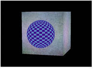
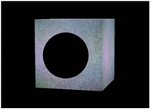
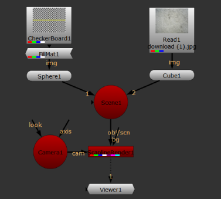

The FillMat node lets you replace selected material channels with a constant color. Typically, you would use this node to make one object hold out the others. When you set the FillMat color to 0, it acts as a “3D cookie cutter” and makes a black hole where the material would otherwise be.
|
 |
 |
| A sphere in front of a cube. | The same scene with the sphere material’s rgba channels set to black using the FillMat node. |
|
|
| The alpha channel after applying the FillMat node. |
This is similar to using a black Constant node as the input texture. However, the advantage of using the FillMat node is that you can easily apply it to the alpha channel in addition to the rgb channels. Another advantage is that the FillMat node doesn’t break the shading sequence, so you can insert it after other material nodes in your node tree.
| 1. | Select 3D > Shader > FillMat to insert a FillMat node between the 2D image you’re using for the surface texture and the 3D object node that creates the surface. |

| 2. | In the FillMat controls, use the channels controls to select the channels you want to replace with a constant color. |
| 3. | Use the color control to select the constant color. By default, this is set to black (0). |
|
|